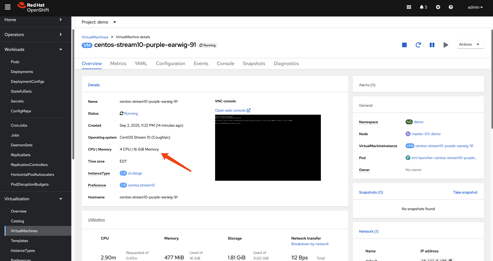

OpenShift Workload Partitioning Deep Dive
Introduction
Workload Partitioning is a powerful feature in OpenShift designed to provide CPU core isolation between critical OpenShift system components and user-deployed workloads. This isolation is particularly beneficial in resource-constrained environments such as Single-Node OpenShift (SNO) or 3-node compact clusters, where system services and user applications run on the same hosts and compete for CPU resources.
By dedicating specific CPU cores to the system and others to workloads, you can achieve more predictable performance and prevent user applications from impacting the stability and responsiveness of the cluster’s control plane.
This document provides a detailed demonstration of how to configure and verify workload partitioning. We will deploy sample pods and a virtual machine to observe how the CPU isolation is enforced.
For official documentation, please refer to the Red Hat OpenShift Container Platform documentation:
1. Enabling Workload Partitioning
Workload partitioning must be enabled during the initial
cluster installation. This is done by adding the
cpuPartitioningMode parameter to your
install-config.yaml file.
# install-config.yaml
...
cpuPartitioningMode: AllNodes
...After the cluster is installed with this setting, you can
apply a PerformanceProfile to define the CPU
allocation.
Applying the Performance Profile
In this example, we have a 3-node compact cluster where each node has 24 CPU cores. For demonstration purposes, we will reserve the first 20 cores (0-19) for OpenShift system components and leave the remaining 4 cores (20-23) for user workloads. For actual production environments, the number of reserved CPU cores for OpenShift components depends on the specific deployment. A minimum of 4 CPU cores is required, but 8 cores per node are recommended for a 3-node compact cluster.
Create and apply the following
PerformanceProfile manifest:
# Note: Ensure $BASE_DIR is set to your working directory
tee $BASE_DIR/data/install/performance-profile.yaml << 'EOF'
---
apiVersion: performance.openshift.io/v2
kind: PerformanceProfile
metadata:
name: openshift-node-performance-profile
spec:
cpu:
# Cores reserved for user workloads
isolated: "20-23"
# Cores reserved for OpenShift system components and the OS
reserved: "0-19"
machineConfigPoolSelector:
pools.operator.machineconfiguration.openshift.io/master: ""
nodeSelector:
node-role.kubernetes.io/master: ''
numa:
# "restricted" policy enhances CPU affinity
topologyPolicy: "restricted"
realTimeKernel:
enabled: false
workloadHints:
realTime: false
highPowerConsumption: false
perPodPowerManagement: false
EOF
oc apply -f $BASE_DIR/data/install/performance-profile.yamlVerifying System Component CPU Affinity
Once the PerformanceProfile is applied, the
nodes will reboot to apply the new configuration. We can then
verify that critical system processes, like etcd,
are correctly pinned to the reserved CPU cores.
First, log in to a master node. Then, use the following
script to check the CPU affinity for all etcd
processes:
# Find all PIDs for etcd processes
ETCD_PIDS=$(ps -ef | grep "etcd " | grep -v grep | awk '{print $2}')
# Iterate through each PID and check its CPU affinity
for pid in $ETCD_PIDS; do
echo "----------------------------------------"
echo "Checking PID: ${pid}"
COMMAND=$(ps -o args= -p "$pid")
echo "Command: ${COMMAND}"
echo -n "CPU affinity (Cpuset): "
taskset -c -p "$pid"
doneThe output should confirm that the etcd
processes are running on the reserved cores (0-19).
# Expected Output
----------------------------------------
Checking PID: 4332
Command: etcd --logger=zap ...
CPU affinity (Cpuset): pid 4332's current affinity list: 0-19
----------------------------------------
Checking PID: 4369
Command: etcd grpc-proxy start ...
CPU affinity (Cpuset): pid 4369's current affinity list: 0-192. Testing Workload Isolation with Pods
Now, let’s test how different Quality of Service (QoS) classes of pods behave under this configuration. We will deploy a CPU-intensive pod and observe its CPU usage.
Test Case 1: BestEffort Pod
A BestEffort pod is created when no resource
requests or limits are specified. These pods are scheduled on
the isolated (workload) CPUs.
tee $BASE_DIR/data/install/pod-besteffort.yaml << 'EOF'
---
apiVersion: apps/v1
kind: Deployment
metadata:
name: cpu-stress-deployment
namespace: demo
spec:
replicas: 1
selector:
matchLabels:
app: cpu-stress
template:
metadata:
labels:
app: cpu-stress
spec:
volumes:
- name: temp-space
emptyDir: {}
containers:
- name: stress-ng-container
image: quay.io/wangzheng422/qimgs:rocky9-test-2025.04.30.v01
volumeMounts:
- name: temp-space
mountPath: "/tmp/stress-workdir"
# No resources defined, resulting in a BestEffort QoS class
command:
- "/bin/bash"
- "-c"
- |
echo "Starting stress test on 4 CPUs...";
stress-ng --cpu 4 --cpu-load 100 --temp-path /tmp/stress-workdir
EOF
oc apply -f $BASE_DIR/data/install/pod-besteffort.yamlBy running top on the host node, you will
observe that the stress-ng processes are consuming
100% of the CPU on cores 20, 21, 22, and 23, while the reserved
cores (0-19) remain largely unaffected.
# top output snippet
%Cpu19 : 2.0 us, 1.3 sy, 0.0 ni, 96.3 id, 0.0 wa, 0.3 hi, 0.0 si, 0.0 st
%Cpu20 : 98.7 us, 0.3 sy, 0.0 ni, 0.0 id, 0.0 wa, 0.7 hi, 0.3 si, 0.0 st
%Cpu21 : 97.0 us, 1.0 sy, 0.0 ni, 0.0 id, 0.0 wa, 0.7 hi, 1.3 si, 0.0 st
%Cpu22 : 99.3 us, 0.3 sy, 0.0 ni, 0.0 id, 0.0 wa, 0.3 hi, 0.0 si, 0.0 st
%Cpu23 : 99.3 us, 0.3 sy, 0.0 ni, 0.0 id, 0.0 wa, 0.3 hi, 0.0 si, 0.0 stTo further confirm the CPU pinning, we can inspect the
process affinity using taskset. First, we find the
parent process ID (PID) of our stress-ng workers.
Then, we use taskset to check which CPU cores that
process is bound to.
The output below shows that the parent stress-ng
process (e.g., PID 86399) and its children are indeed bound to
the isolated CPU core list, 20-23, confirming that the workload
partitioning is working as expected.
# Find the parent process of the stress test
ps -ef | grep "stress-ng"
# .....
1000740+ 86399 86397 0 10:57 ? 00:00:00 stress-ng --cpu 4 --cpu-load 100 --temp-path /tmp/stress-workdir
# ... additional worker processes
# Check the CPU affinity of the parent process
taskset -c -p 86399
pid 86399's current affinity list: 20-23Test Case 2: Burstable Pod
A Burstable pod has resource requests that are
lower than its limits. These pods are also scheduled on the
isolated CPUs.
# Modify the deployment to set different requests and limits
...
resources:
requests:
cpu: "1"
memory: "512Mi"
limits:
cpu: "4"
memory: "512Mi"
...The result is the same: the workload runs exclusively on the
isolated cores (20-23), demonstrating that the partitioning
holds for Burstable pods.
To verify the CPU affinity, we can again use the
taskset command. Find the process ID (PID) of the
stress-ng process and check its core bindings. The
output will confirm that the Burstable pod is also
correctly pinned to the isolated CPUs.
# Find the PID of the stress-ng process
ps -ef | grep stress-ng
# ............
# 1000740+ 108987 108985 0 03:15 ? 00:00:00 stress-ng --cpu 4 --cpu-load 100 --temp-path /tmp/stress-workdir
# ............
# Check the CPU affinity
taskset -c -p 108987
# pid 108987's current affinity list: 20-23Test Case 3: Guaranteed Pod
A Guaranteed pod has CPU requests equal to its
CPU limits. The Kubernetes CPU Manager assigns exclusive CPUs to
each container in a Guaranteed pod.
# Modify the deployment to set equal requests and limits
...
resources:
requests:
cpu: "3"
memory: "512Mi"
limits:
cpu: "3"
memory: "512Mi"
...When this pod runs, it will be granted exclusive access to 3
cores from the isolated set (e.g., 20, 21, 22). The
top output will show these specific cores at 100%
utilization, while the fourth isolated core (23) and the
reserved cores remain available.
We can inspect the CPU bindings to confirm this behavior.
Note that the pod is granted 3 exclusive cores (e.g., 20-22)
from the isolated set, matching its resource definition, even
though the internal stress-ng command attempts to
use 4 CPUs. This demonstrates the enforcement of resource limits
for Guaranteed pods.
# Find the PID of the stress-ng process
ps -ef | grep stress-ng
# ..........
# 1000740+ 59439 59437 0 03:13 ? 00:00:00 stress-ng --cpu 4 --cpu-load 100 --temp-path /tmp/stress-workdir
# ..........
# Check the CPU affinity
taskset -c -p 59439
# pid 59439's current affinity list: 20-223. Testing Workload Isolation with a Virtual Machine
Workload partitioning also applies to virtual machines managed by OpenShift Virtualization. Let’s create a VM with 4 vCPUs and run the same stress test.
Create a VM: Use the OpenShift console or
virtctlto create a virtual machine with 4 CPU cores in a project/namespace.
Access the VM and Run Stress Test: Use
virtctlto SSH into the VM and execute thestress-ngcommand.# Download and install virtctl if you haven't already wget --no-check-certificate https://hyperconverged-cluster-cli-download-openshift-cnv.apps.demo-01-rhsys.wzhlab.top/amd64/linux/virtctl.tar.gz tar zvxf virtctl.tar.gz mv virtctl ~/.local/bin/ # SSH into the VM and run the test virtctl -n demo ssh user@vm-name --identity-file=~/.ssh/id_rsa stress-ng --cpu 4 --cpu-load 100 --temp-path /tmpObserve Host CPU Usage: Checking
topon the host node will again show that the QEMU process for the VM is consuming CPU cycles exclusively from the isolated cores (20-23).# top output snippet %Cpu19 : 1.7 us, 2.0 sy, 0.0 ni, 96.4 id, 0.0 wa, 0.0 hi, 0.0 si, 0.0 st %Cpu20 : 99.0 us, 0.3 sy, 0.0 ni, 0.0 id, 0.0 wa, 0.7 hi, 0.0 si, 0.0 st %Cpu21 : 96.7 us, 0.3 sy, 0.0 ni, 0.0 id, 0.0 wa, 1.0 hi, 2.0 si, 0.0 st %Cpu22 : 98.7 us, 0.3 sy, 0.0 ni, 0.0 id, 0.0 wa, 1.0 hi, 0.0 si, 0.0 st %Cpu23 : 99.0 us, 0.7 sy, 0.0 ni, 0.0 id, 0.0 wa, 0.3 hi, 0.0 si, 0.0 stVerifying VM Process CPU Affinity
Finally, we can confirm the CPU affinity of the VM’s QEMU process on the host node. This demonstrates that the entire virtual machine, as a workload, is constrained to the isolated CPU cores.
# Find the PID of the qemu-kvm process for the VM ps -ef | grep qemu-kvm # 107 44891 44699 62 03:04 ? 00:04:53 /usr/libexec/qemu-kvm -name guest=demo_centos-stream10-tan-tarantula-34,............. # Check its CPU affinity taskset -c -p 44891 # pid 44891's current affinity list: 20-23
4. Behind the Scenes: How It Works
The isolation is achieved through a combination of configurations at the Kubelet and CRI-O levels, managed by the Performance Addon Operator.
Kubelet Configuration
The PerformanceProfile creates a
KubeletConfig object. The key parameter here is
reservedSystemCPUs.
oc get kubeletconfig performance-openshift-node-performance-profile -o yaml# Snippet from KubeletConfig
...
spec:
kubeletConfig:
...
cpuManagerPolicy: static
reservedSystemCPUs: 0-19
topologyManagerPolicy: restricted
...The reservedSystemCPUs: 0-19 directive instructs
the Kubelet to reserve cores 0-19 for the operating system and
Kubernetes system daemons. The Kubelet’s CPU Manager will only
consider the remaining cores (20-23) as allocatable for
pods.
CRI-O Configuration
Additionally, a CRI-O configuration file is created to pin specific system-level workloads to the reserved cores. This ensures that even containers part of the OpenShift infrastructure are constrained to the reserved set.
# On a master node
cat /etc/crio/crio.conf.d/99-workload-pinning.conf[crio.runtime.workloads.management]
activation_annotation = "target.workload.openshift.io/management"
annotation_prefix = "resources.workload.openshift.io"
resources = { "cpushares" = 0, "cpuset" = "0-19" }This configuration tells CRI-O that any pod with the
target.workload.openshift.io/management annotation
should be placed on the 0-19 cpuset. This is how
control plane pods are pinned, ensuring they do not interfere
with user workloads.
Verifying Core Isolation at the Kernel Level
The final and most fundamental layer of verification is to
inspect the kernel’s boot parameters. These parameters, passed
to the Linux kernel at startup, provide the low-level
instructions that enforce CPU isolation from the very beginning
of the system’s operation. By examining
/proc/cmdline, we can see the direct result of the
PerformanceProfile configuration.
cat /proc/cmdline
BOOT_IMAGE=(hd0,gpt3)/boot/ostree/rhcos-c97ac5f995c95de8117ca18e99d4fd82651d24967ea8f886514abf2d37f508cd/vmlinuz-5.14.0-427.81.1.el9_4.x86_64 ignition.platform.id=metal ostree=/ostree/boot.0/rhcos/c97ac5f995c95de8117ca18e99d4fd82651d24967ea8f886514abf2d37f508cd/0 root=UUID=910678ff-f77e-4a7d-8d53-86f2ac47a823 rw rootflags=prjquota boot=UUID=5da29aba-79d3-42eb-b6f1-df02cd30cc8a skew_tick=1 tsc=reliable rcupdate.rcu_normal_after_boot=1 nohz=on rcu_nocbs=20-23 tuned.non_isolcpus=000fffff systemd.cpu_affinity=0,1,2,3,4,5,6,7,8,9,10,11,12,13,14,15,16,17,18,19 intel_iommu=on iommu=pt isolcpus=managed_irq,20-23 intel_pstate=disable systemd.unified_cgroup_hierarchy=1 cgroup_no_v1=all psi=0The output reveals several key parameters that directly enable workload partitioning:
isolcpus=managed_irq,20-23: This is the primary parameter instructing the Linux kernel scheduler to isolate cores 20-23. The scheduler will avoid placing general-purpose processes on these cores, reserving them for workloads that are explicitly affinitized. Themanaged_irqoption allows some interrupt handling to remain on these cores to prevent system instability.rcu_nocbs=20-23: This parameter offloads RCU (Read-Copy-Update) callbacks from the isolated cores. RCU is a synchronization mechanism in the kernel, and moving its callbacks away from the workload cores helps to reduce kernel “noise” and ensures more predictable performance for applications.systemd.cpu_affinity=0,1,2,3,4,5,6,7,8,9,10,11,12,13,14,15,16,17,18,19: This parameter pins thesystemdinit process (PID 1) and, by extension, all core system services it manages, to the reserved CPU set (0-19).tuned.non_isolcpus=000fffff: This provides a CPU mask to thetuneddaemon, which manages performance profiles. The mask000fffffcorresponds to the first 20 CPUs (0-19), explicitly tellingtunedthat these are the non-isolated, general-purpose cores.
Together, these kernel arguments create a robust, low-level foundation for CPU isolation, ensuring that the separation between system and workload resources is maintained right from the boot process.
5. Node Status Comparison
The effect of workload partitioning is clearly visible in the
oc describe node output, specifically in the
Capacity and Allocatable sections.
After Workload Partitioning
Notice that while the Capacity shows 24 total
CPUs, the Allocatable CPU count is only 4. This
reflects the 20 cores that were reserved for the system.
# oc describe node master-01-demo (After)
...
Capacity:
cpu: 24
memory: 30797848Ki
pods: 250
Allocatable:
cpu: 4
memory: 29671448Ki
pods: 250
...Before Workload Partitioning
Without workload partitioning, the Allocatable
CPU is much higher (e.g., 23.5), as only a small fraction is
reserved by default for system overhead.
# oc describe node master-01-demo (Before)
...
Capacity:
cpu: 24
memory: 30797840Ki
pods: 250
Allocatable:
cpu: 23500m
memory: 29646864Ki
pods: 250
...This comparison starkly illustrates how workload partitioning carves out a dedicated, non-allocatable set of CPU resources for system stability.
Conclusion
Workload partitioning is an essential feature for running
OpenShift in environments where resource contention is a
concern. By creating a hard boundary between system and workload
CPUs, it provides performance isolation, ensures control plane
stability, and allows for more predictable application behavior.
The configuration, managed via a
PerformanceProfile, offers a robust mechanism to
tailor CPU resource allocation to specific hardware and workload
requirements.